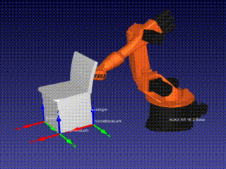

Controlling a KUKA Robot with Python and RoboDK
last modified: 2022-08-05The RoboDK API has a reference for python scripting. This is a documentation of a simple project to learn the movement of the robot.
Robot PythonLink